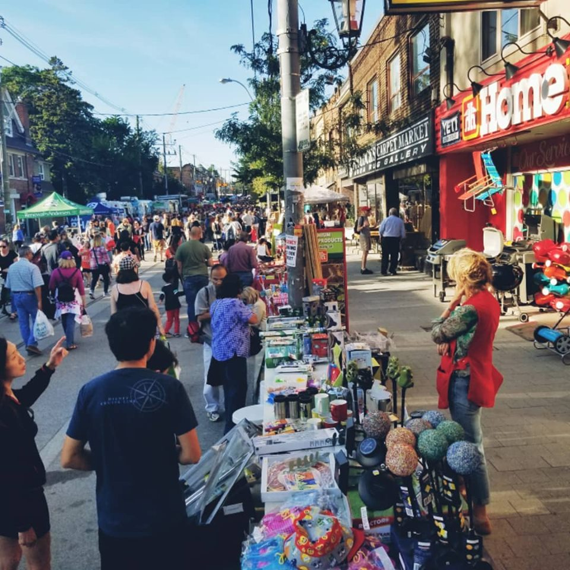
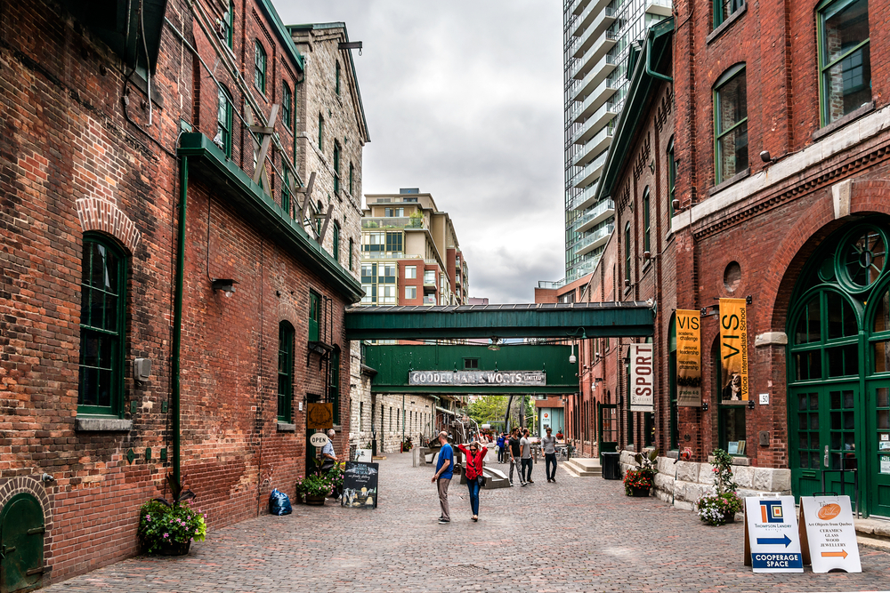
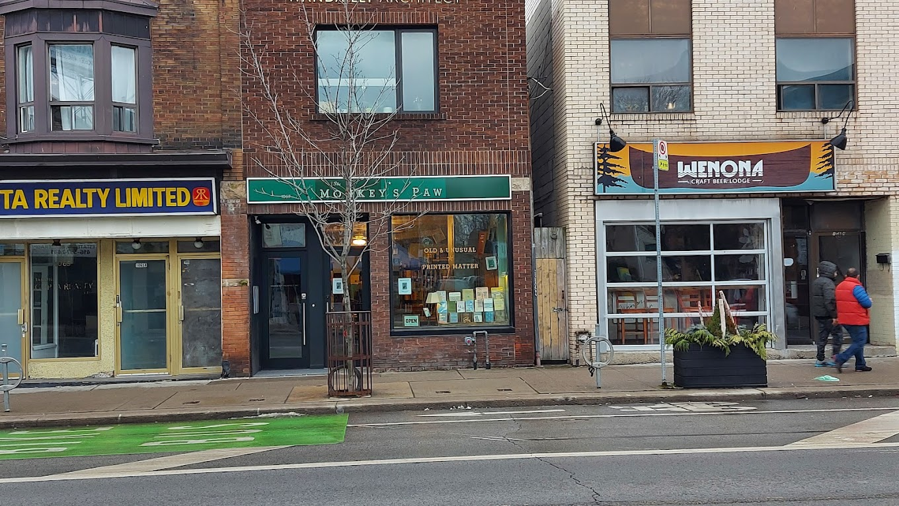

Kensington Market

🎨Feast for the Senses! 🎶
Step into Kensington Market, and it's like stepping into a world of colors, art, and music! 🎨🌈 You'll be captivated by the striking murals, tantalizing aromas, and the lively rhythm of street music.
🎵🥁 It's a sensory explosion that'll ignite your adventurous spirit!
🚶♂️ Pedestrian Sundays: The Ultimate Fun! 🕺💃
Psst... mark your calendars! 🗓️ The last Sunday of every month is pure magic in Kensington Market! 🔮🌟 Pedestrian Sundays turn the streets into a party zone, where the entire neighborhood comes ALIVE! 🎉 Dance, sing, and join in the merry-making with live performances and a vibrant community spirit! 🎭🕺 Don't forget to capture those amazing moments and let your social media fam join the fun! 📸😎 #PedestrianSundays #KensingtonVibes
🌮 Taco Heaven Alert! 🌮
Okay, foodie fam, you can't miss this! 😍🌮
@SevenLivesTaco is THE go-to spot for the most drool-worthy seafood tacos you'll ever have! 🐟🔥 Imagine feasting on flavor-packed, mouthwatering goodness that'll make your taste buds sing! 🎶🤤 Trust us; it's worth every single bite! 🙌 #TacoCravings #SeafoodLovers
DISTILLERY DISTRICT

🏰 A Glimpse into History - The Birth of Distillery District 🏰
Step back in time as you wander through the Distillery District's cobblestone streets. This captivating district traces its roots to the early 19th century when it was originally founded as the Gooderham and Worts Distillery. 🏭🌾 Established in 1832, it was once the largest distillery in the British Empire, producing world-renowned whiskey and spirits. Today, the beautifully preserved heritage buildings and Victorian industrial architecture create a nostalgic setting for your holiday adventures! 🏛️🌟
🎄 The Main Attraction: Christmas Extravaganza! 🎁🎉
Christmas in the Distillery District is nothing short of a spectacle! 🎉🎄 The air is filled with the sweet aroma of freshly baked treats, and the streets come alive with festive performances, carolers, and lively markets! 🎶🎄 Embrace the holiday spirit as you explore charming artisan shops, showcasing unique handcrafted gifts for your loved ones! 🎁✨
🎞️ Lavazza IncluCity Film Festival! 🍿🎥
Calling all movie buffs! 🎞️🍿 The Distillery District hosts the highly anticipated "Lavazza IncluCity Film Festival" every June! 🎬🌟 Presented by Lavazza, this festival celebrates inclusivity, embracing diverse stories and voices in cinema. 🌈✨ Prepare to be captivated by a curated selection of thought-provoking films, eye-opening documentaries, and heartwarming narratives that leave a lasting impact on your soul. ❤️🎞️
☕ Fuel Your Creativity at Balzac's Coffee ☕🎨
Before or after immersing yourself in the world of cinema, recharge at
@BalzacsCoffee! ☕🎥 This cozy coffee haven is a gathering spot for film enthusiasts, providing the perfect ambiance for discussions and exchanges of ideas. 🗣️🎉 Savor their delightful brews and delectable treats as you dive into captivating film conversations. 🍰🌟 #CoffeeAndCinema #CreativeSips
📍 Directions to the Distillery District 🗺️🚗🚇
🚗 By Car: Set your GPS to 55 Mill St, Toronto, ON M5A 3C4, Canada. The Distillery District is easily accessible from the Gardiner Expressway and the Don Valley Parkway. On-site paid parking is available for your convenience.
🚇 By Public Transport: Take the subway to King Station and hop on the 504 King streetcar heading east. Disembark at the Distillery Loop streetcar stop, just steps away from the district's entrance.
Monkey's Paw

📚🐾 Unleash Your Literary Wanderlust - Discover Monkey's Paw, Toronto's Literary Wonderla! 🏰✨
Calling all book lovers and bibliophiles! 📖🌟 Get ready to embark on a literary adventure like no other at Monkey's Paw, Toronto's one-of-a-kind book paradise! 🐒🍃 This enchanting bookstore has a captivating history and a magical charm that'll leave you spellbound from the moment you step through its doors! 🚪🎩
🏰 A Tale of Literary Enchantment - The Birth of Monkey's Paw 📖🌈
Monkey's Paw opened its doors in 2006, born out of the passion and vision of its owner, David H. Mason. 🗝️🎨 David, a bibliophile and artist, wanted to create a haven where the love for books and the wonder of storytelling could thrive. Thus, Monkey's Paw came to life, with its shelves adorned with unique, quirky, and rare literary treasures! 📚✨ The store's name itself is an ode to the famous short story by W.W. Jacobs, adding a touch of whimsy to its literary journey! 🐵🍃
🚶 Directions to Monkey's Paw - Unlock the Bookish Wonderland! 🗺️🚪
🚗 By Car: Set your GPS to Monkey's Paw at the above address, and park nearby to embark on your literary adventure.
🚇 By Public Transport: Take the subway to Lansdowne Station, and then enjoy a short stroll to Monkey's Paw - a journey just as charming as the destination! 🚶🏽🌟